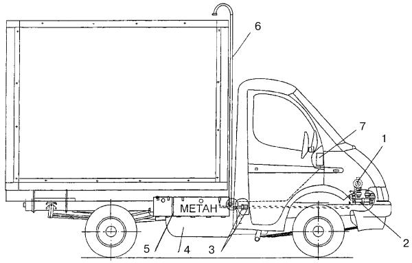
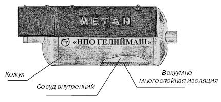
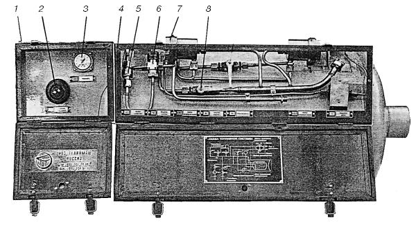
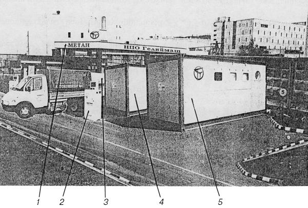

Установка для работы на сжиженном природном газе (СПГ) метане «Гелий – САГА».
Реализация новых технологических решений, направленных на использование сжиженного природного газа – метана (СПГ) в качестве моторного топлива, позволяет получить значительный экономический эффект благодаря уменьшению эксплуатационных затрат (обычная «Газель» при заправке газовым топливом проезжает не 200 км, как принято считать, а 450), а также создать энергетический мост в экологически благополучное общество.
Главная особенность в конструкции автомобильной установки для работы на СПГ – наличие бака криогенного топливного (БКТ) с высокими вакуумно-теплоизоляционными свойствами для хранения газа. Охлажденный до температуры –160 °C метан переходит в жидкое состояние уже при атмосферном давлении и значительно уменьшается в объеме.
Научно-производственная фирма «САГА» совместно с НПО «ГЕЛИЙМАШ» разработала газотопливное оборудование, предназначенное для содержания и подачи СПГ в БКТ и в двигатель автомобиля «Газель».

Рис. 31. Схема размещение АГТС «Гелий-САГА» на автомобиле «Газель»: 1 – редуктор-испаритель; 2 – теплообменник; 3 —трубопроводы подачи газа к теплообменнику; 4 – бак криогенный топливный; 5 – арматурный шкаф; 6 – дренажный трубопровод; 7 – панель приборов.
Схема размещения автомобильной газовой топливной системы (АГТС) «Гелий-САГА» на «Газели» приведена на рис. 31. Криогенный топливный бак (4) закреплен при помощи двух кронштейнов на правом лонжероне рамы автомобиля за кабиной водителя. Заправочное устройство контрольно-измерительные приборы установлены в арматурном шкафу (5), размещенном на БКТ. Дренажный трубопровод (6) предназначен для отвода в атмосферу парообразного газа, вышедшего из-под предохранительных клапанов, расположенных в арматурном шкафу, а также для аварийного сброса газа при повреждении арматуры. Дренажный трубопровод выведен над тентом бортового кузова и прикреплен к кузову хомутами. Аварийный сброс газа из БКТ осуществляется через скоростной клапан, также находящийся в арматурном шкафу.
Панель приборов (7), расположенная в кабине водителя, обеспечивает управление газовой аппаратурой и контроль ее работы.
На арматурном шкафу БКТ, окрашенном в красный цвет, белой краской сделана надпись «МЕТАН».

Рис. 32. Бак криогенный топливный.
Криогенный топливный бак представляет собой двойной/ цилиндрический резервуар (рис. 32), изготовленный из нержавеющей стали. Внутренний сосуд рассчитан на избыточное давление, равное рабочему давлению 0,5 МПа. Для поддержания требуемого разрежения в изолирующем пространстве между сосудом внутренним и кожухом для обеспечения термоизоляции наружная поверхность внутреннего сосуда покрыта высокоэффективной вакуумно-многослойной изоляцией (экранно-вакуумная теплоизоляция). Внутренний сосуд закреплен в кожухе двумя цилиндрическими опорными втулками из стеклопластика (на рисунке не показаны).
Вместимость газового сосуда 100 л. Количество СПГ, заливаемого в бак, 90 л (эквивалентный объем газа в нормальных условиях 60 м3).
Запас газа в баке обеспечивает примерно такой же пробег автомобиля, как и на бензине.
В баке газ хранится без потерь в течение пяти суток – так называемое бездренажное хранение. Тепло окружающей атмосферы нагревает бак, и примерно через 120 час давление в нем может увеличиться. При этом срабатывают предохранительные клапаны, и паровая фаза газа выбрасывается в окружающую среду через дренажный трубопровод. Сбросить газ бака для понижения давления можно также через шаровые краны (см. ниже) в дренажный трубопровод.
При заправке уровень СПГ в баке контролируют по манометру в арматурном шкафу, а при движении – по указателю уровня газа, который находится в кабине водителя.

Рис. 33. Арматурный шкаф: 1 – заправочный отсек; 2 – заправочная горловина; 3 – манометр; 4 – функциональный отсек; 5 – скоростной клапан; 6 – клапан переключения фаз; 7 – предохранительный клапан; 8 – шаровые краны.
Арматурный шкаф (рис. 33) смонтирован непосредственно на баке. Он состоит из двух отсеков: заправочного (1) и функционального (4). Каждый из отсеков снабжен самостоятельно открывающейся крышкой с замком. В заправочном отсеке на специальной панели размещены манометр (3) и заправочная горловина (2). В заправочной горловине объединены две линии – заправки и газосброса. В функциональном отсеке находятся предохранительные клапаны (7), скоростной клапан (5), клапан (6) переключения фаз и шаровые краны (8). Предохранительные клапаны настроены на рабочее давление 0,5 МПа.
При увеличении рабочего давления от 0,54 до 0,57 МПа клапаны открываются, и происходит сброс паров метана в дренажный трубопровод.
Скоростной клапан служит для отключения бака и прекращения подачи газа в случае повреждения или обрыва магистрального трубопровода.
Клапан переключения фаз выполняет две функции в зависимости от значения давления газа в баке. При давлении до 0,4 МПа в теплообменник (2) (см. рис. 31) подается жидкая фаза, если давление превышает 0,4 МПа – подается паровая фаза.
Теплообменник предназначен для испарения жидкой фазы и подогрева СПГ, поступающего в двигатель.
Трубопроводы системы изготовлены из нержавеющей стали с проходным сечением 8 мм и имеют тонкие стенки, так как вся система работает под небольшим давлением от 0,15 до 0,55 МПа.
АГТС «Гелий-САГА» работает следующим образом. Газ в жидком виде подается по магистрали в теплообменник, где подогревается жидкостью из системы охлаждения двигателя. В парообразном виде газ поступает непосредственно в газовую систему «CAГA-6». Далее дозировка газа осуществляется по традиционной схеме редуктором-испарителем «САГА-6», где его давление снижается до значения, близкого к атмосферному. Затем под действием разрежения во впускном трубопроводе двигателя газ поступает в смеситель, в котором смешивается с воздухом, и газовоздушная смесь через карбюратор направляется во впускной трубопровод и далее в цилиндры двигателя.
Автомобильная криогенная заправочная станция (КриоАЗС), предназначенная для сжижения природного газа, его накопления и заправки сжиженным природным газом (СПГ) автомобилей. КриоАЗС подключена к газопроводу низкого давления 0,2–0,6 МПа и установлена в непосредственной близости от места расположения автопредприятия. Подобным образом КриоАЗС установлена на автокомбинате № 41 (г. Москва), эксплуатирующем 12–15 малотоннажных грузовых автомобилей «Газель» (рис. 34).

Рис. 34. Автомобильная криогенная заправочная станция: 1 – операторская с блоком управления; 2 – заправочная колонка СПГ; 3 – криогенная емкость для накопления и хранения СПГ; 4 – технологический блок; 5 – компрессорный блок.
Природный газ по трубопроводу от газораспределительного пункта поступает под давлением 0,25 МПа в компрессорное отделение (5), где сжимается до давления 20 МПа, очищается от масла и капельной влаги и подается в технологическое отделение (4). Здесь газ очищается от двуокиси углерода и паров воды, сжижается и при давлении 0,3 МПа по трубопроводу с вакуумно-многослойной изоляцией подается в криогенную емкость (3) для накопления и хранения СПГ. Из операторской, оснащенной блоком управления (1), по команде оператора сжиженный газ под давлением 0,25 МПа подается по раздаточному трубопроводу, оснащенному вакуумно-многослойной теплоизоляцией, к заправочной колонке (2), а от нее – в газовый баллон автомобиля «Газель».
Со своего поста оператор при помощи системы автоматического управления контролирует работу компрессорного и технологического отделений, криогенной емкости и заправочной колонки. Заправку автомобилей «Газель» оператор осуществляет при помощи пульта управления, расположенного на заправочной колонке. Максимальный заправочный объем – 90 л сжиженного природного газа. Время заправки – не более 15 мин.